Role: Lead UX Designer/Researcher
Methods & Tools: Contextual inquiry, Interviews, Observations, Thematic analysis, Journey Mapping, Personas, Measurement framework development, Statistical analysis, AI-based tools
Budget: >$2M
Cross-functional collaborations: Product Manager, System Engineers, Instructors/Subject-Matter-Experts (SMEs).
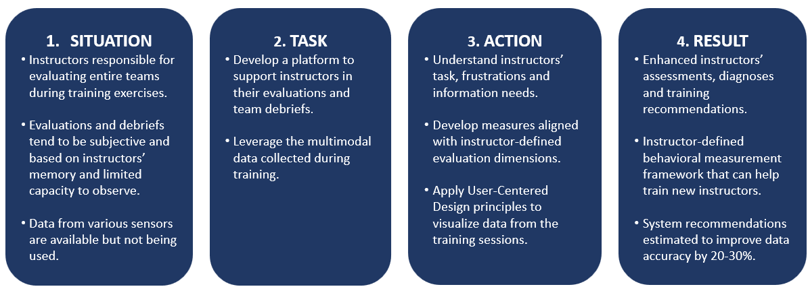
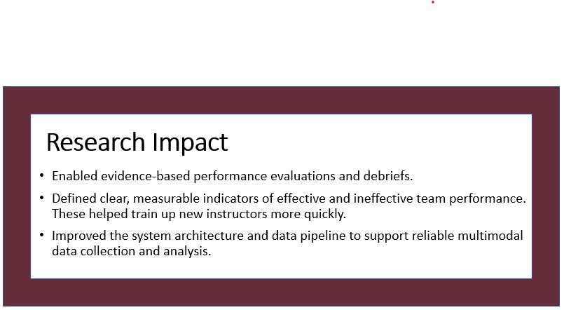
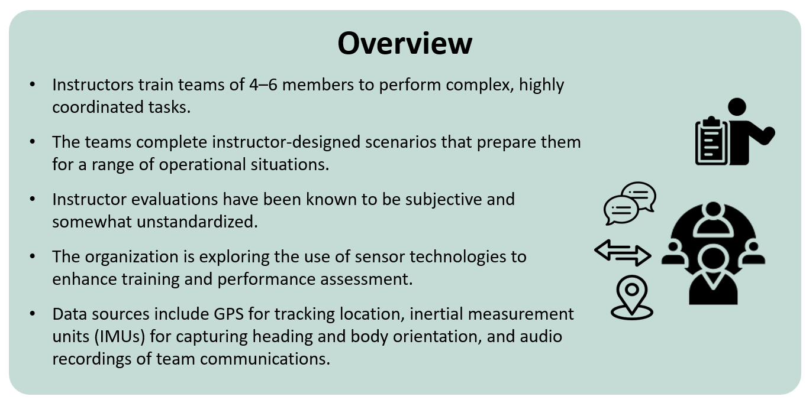
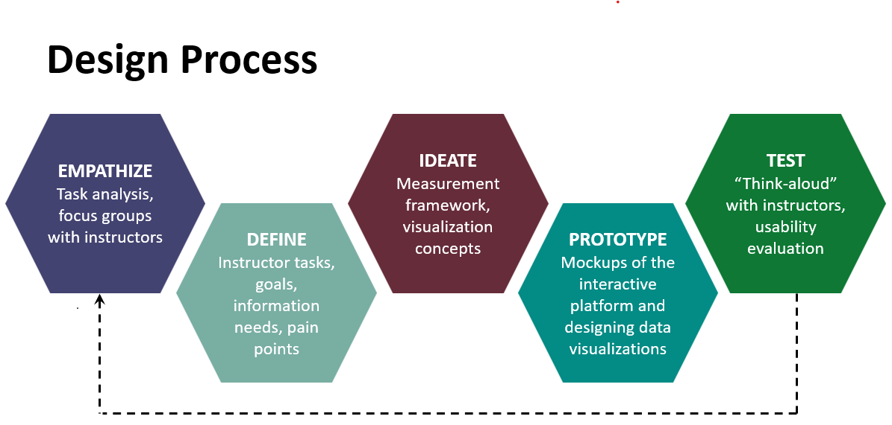
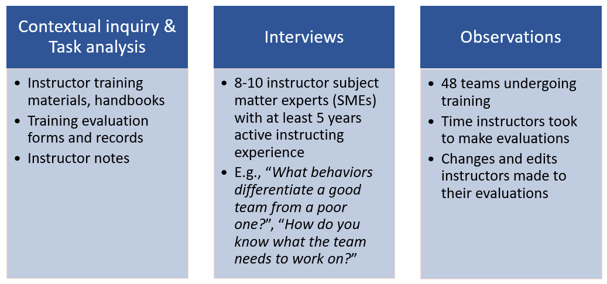
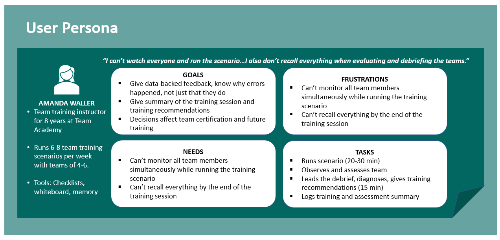
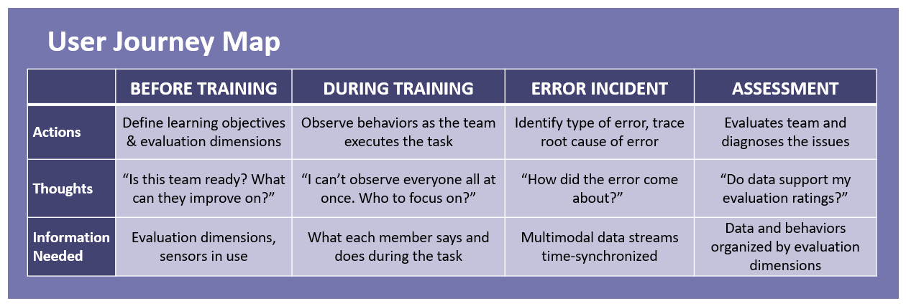
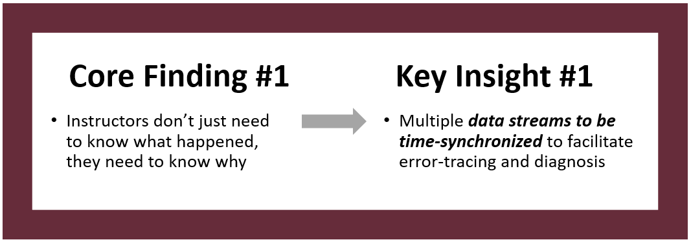
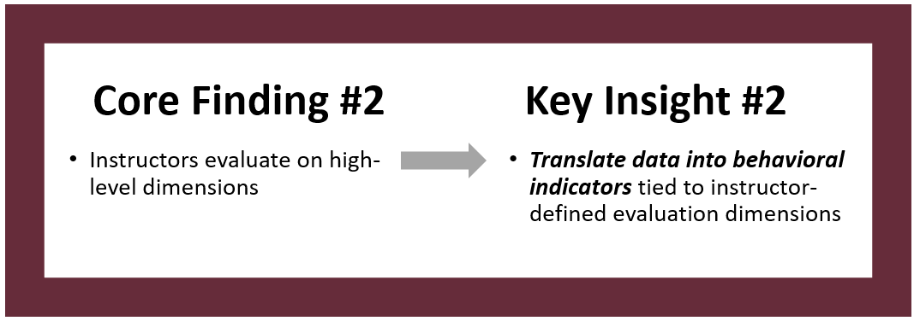
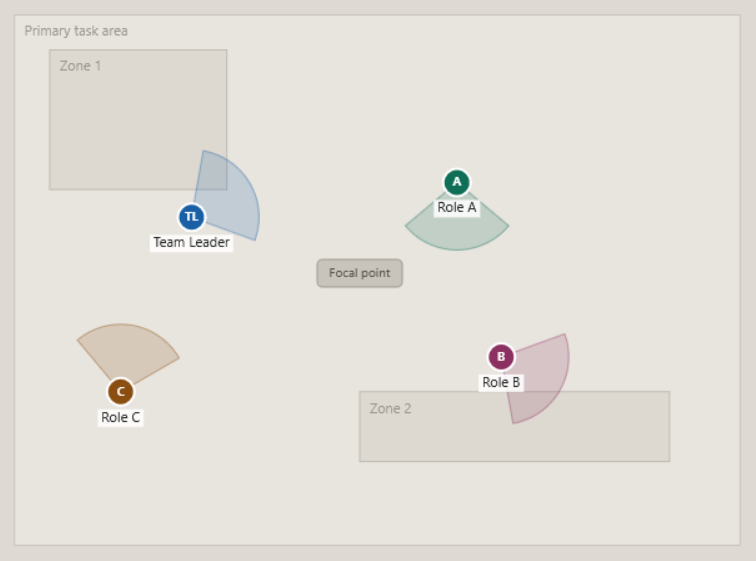
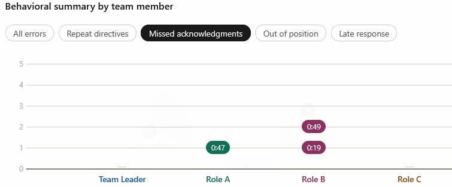
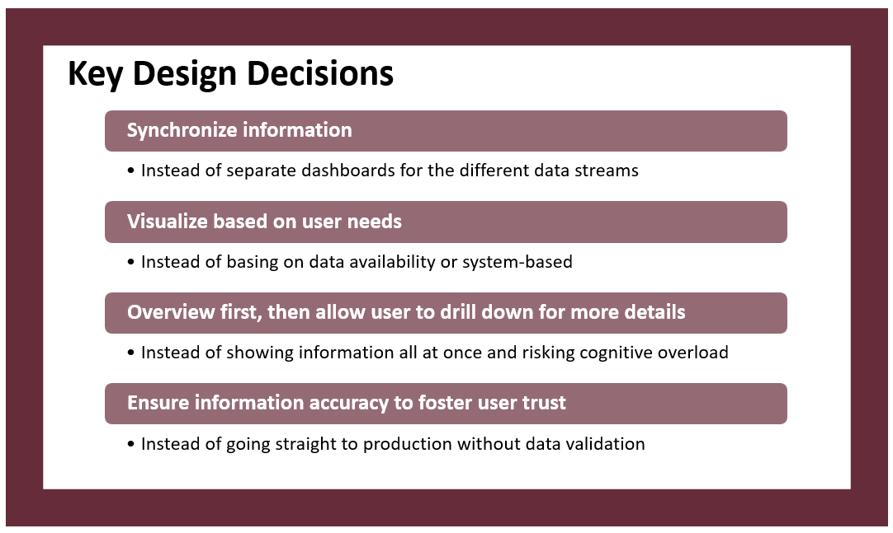